General Specification
- LBA is mobile app by TCP/IP connect for optimal data and fast interactive. not just website viewing app.
- LBA have pre-downloaded data(champion build,static datas) for fast access. don't wait result website page for champion pick screen. if you click champion icon then build reference page will view immediately.
- LBA will manage your rune-page settings. compute optimal rune page settings by downloaded build data. (require own champion and rune check, and setting compute options..)
Server Specification
Using: windows,IOCP,c++,mysql,TCP/IP,distributed server(patch,main,GUID),multi-thread
- rune,mastery,init-item,core-item,skill-level-up,item-build unique binary data is saved to mysql for optimal patch data. ex) core-item binary data size is maximum 32 byte.
- main server using multi-thread for collect data(60 FPS,11 regional-thread for json-query and insert mysql)
- recently 2 month ranked match data auto collecting (Platinum+)
- main server using IOCP for client packet communication.
- static data and champion build data export program. static data missing parameter is corrected by this program.
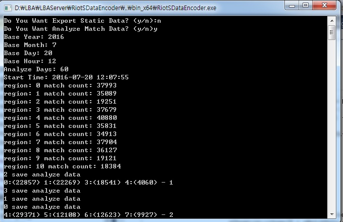
this screen-shot showing static data and champion build data export program, export program also using multi-thread for analyze match data and save file,
11 region, 353172 matches analyzed durnig 3 minutes.
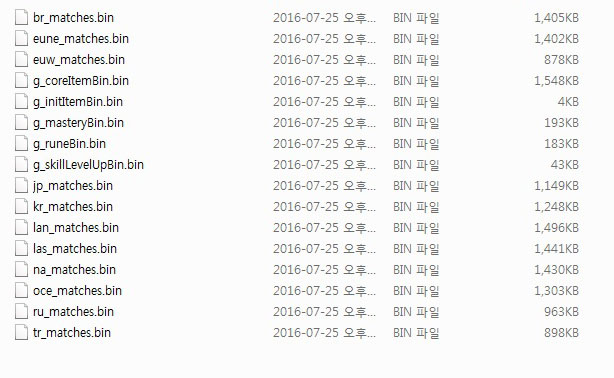
this screen-shot showing analyzing result files. 353172 matches analyzed to these files completely.
these file will pre-downloaded to mobile-app by patch-server for fast access.
total size: 5.14mb, zip size: 1.8mb
Client Specification(ver 1.0)
Using: Unity 5 Pro,TCP/IP
1. Champion Build(progressing..)
- loading from pre-downloaded file. so no internet access required.
- champion grid/list view mode
- sort option(region,version) - match count view
- select role and champion
(a) overview screen view summary build infos
(b) rune,mastery,item,skill.. detail view sort by most,winrate,kda
(c) you will pick vs champion opponent and result will viewing a) and b) for vs specific opponent champion
- counter pick mode(you will select opponent champion first, and seeing winrate datas for vs this champion. if you pick your champion (c) will see.)
 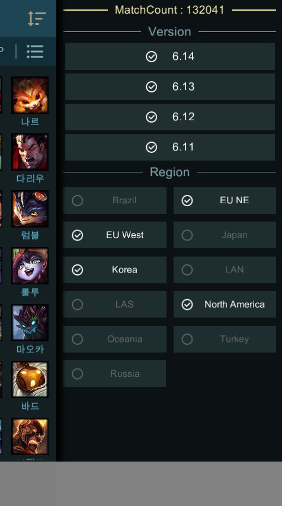 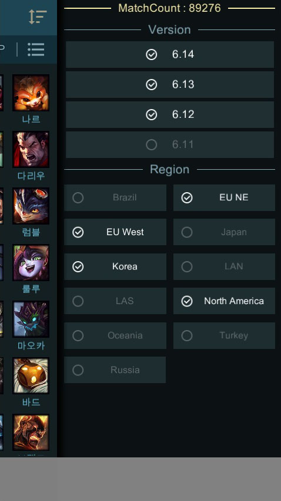
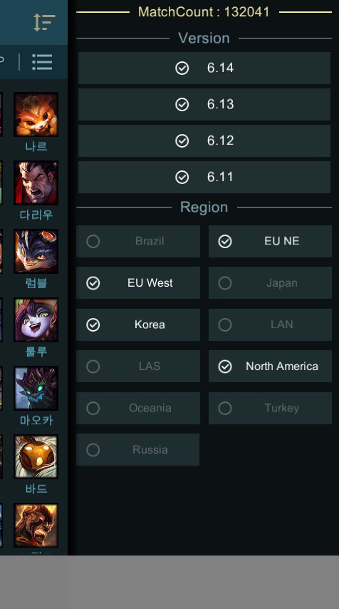 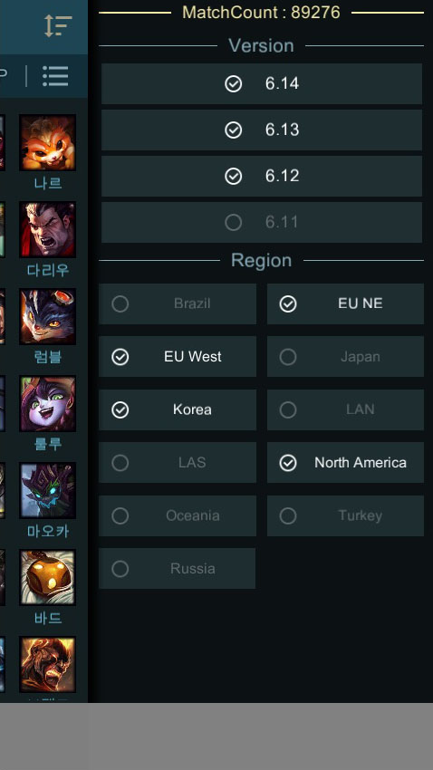
2. Static Data
- loading from corrected pre-downloaded file. so no internet access required.
- champion(Abilities,Statistics,Lore,Tip,Recommend Item,Skin)
- item(sort option:map,group)
- mastery
- rune(sort option:type,effect,tier)
- summoner spell
- all region language support
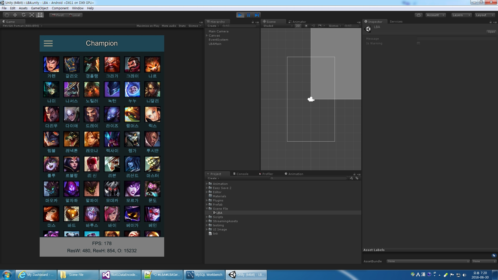


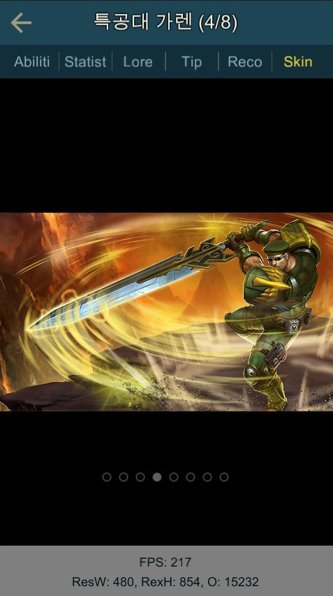 

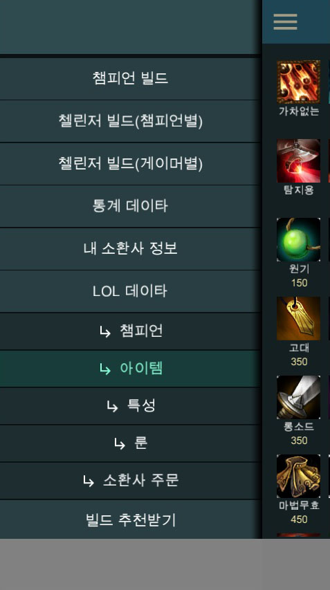 

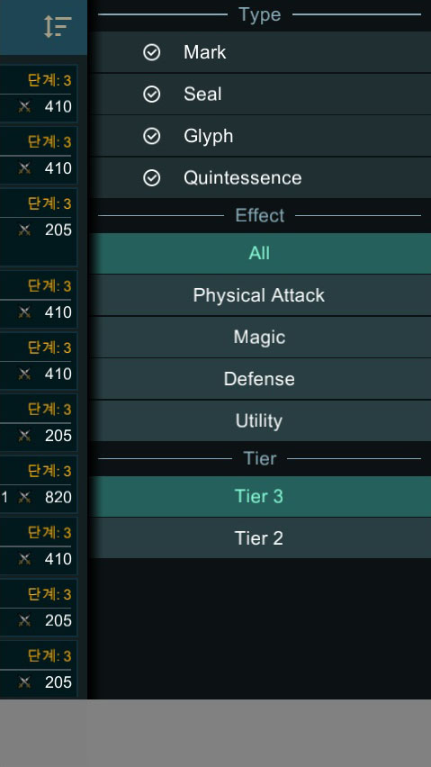 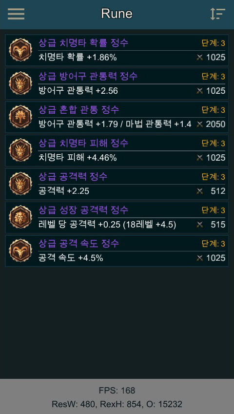 
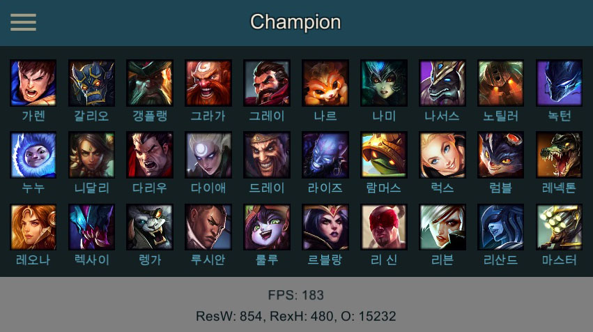 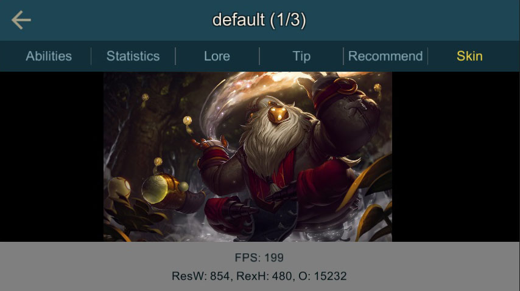
3. Rune Management(implement or not at ver 1.0)
- own rune and own champion save(local save at ver1.0.. later version will save to account server db
- prefered champion and role select option
- compute rune pages via own rune and champion and options by pre-downloades match datas
4. Patch System
Later Version Plan
- server account login system(5 summoner available for management.. summoner quick change by menu
- online request for pro recent match datas,summoner match history etc...
- summoner champion mastery(crafting system) and stats online request
- LCS and LCK etc pro-match recent build data(if this implement, this data will pre-download support like champion build data)
- ProvingGrounds champion-build mode support(if this implement, this data will pre-download support like champion build data)
- etc...